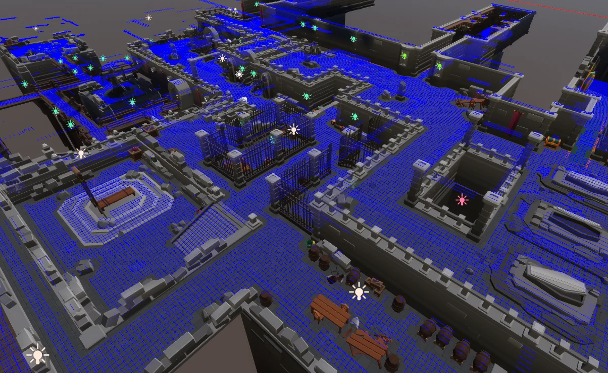
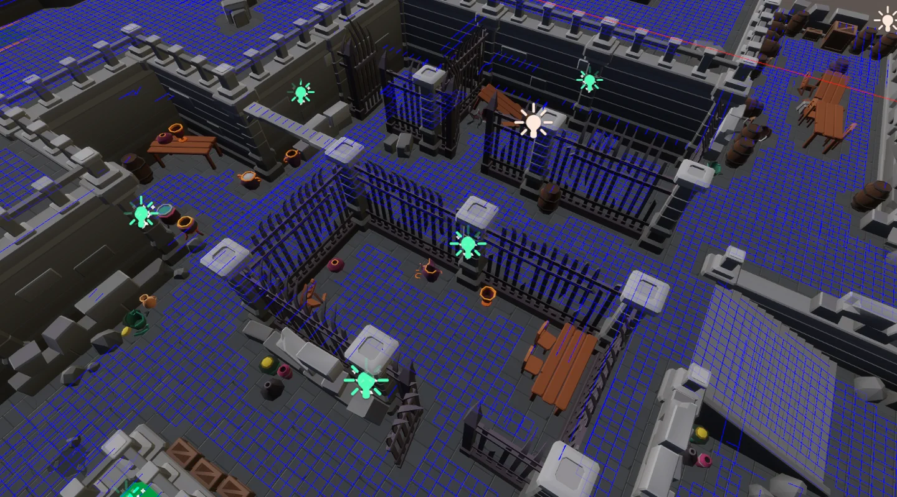
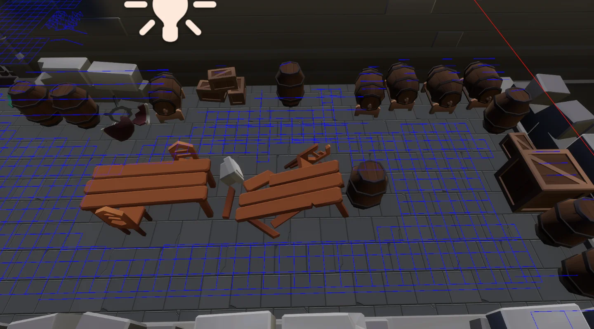
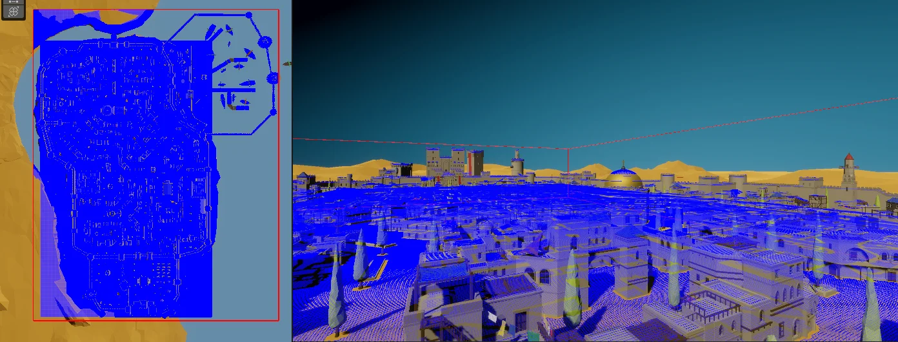
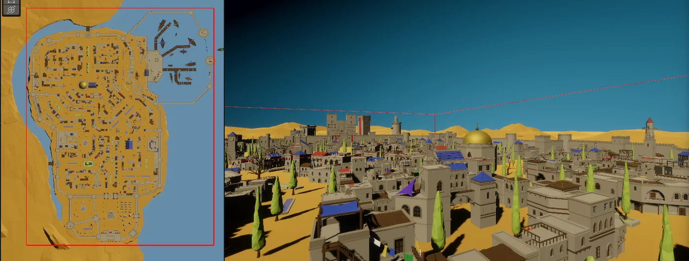

Rol
Game Developer
Descripción
Herramienta para navegación en escenarios 3d. Crea una malla de navegación en la zona indicada por la que los personajes pueden navegar libremente sin tener colisiones con objetos de la capa indicada. Implementa A*, Dijkstra y tiene una interfaz genérica para añadir más algoritmos.
Estado actual
En desarrollo
Funcionamiento
Malla
Se utilizan varios raycast para detectar los objetos en el área de acuerdo a las dimensiones del jugador, el ángulo de inclinación de las superficies y la densidad de esta. Los resultados se guardan en un archivo de texto en StreamingAssets para incluir en la build del proyecto.
Movimiento
Mediante métodos asíncronos y busquedas binarias, se ejecutan los algoritmos de busqueda y se guardan las rutas de movimiento en IEnumerables para una lectura fácil.
Cuando se quiere mover a un punto en específico, hay dos modos de movimiento, por aproximación y por precisión, donde el primero se encarga de verificar que el destino final esté dentro del área transitable y si no, se regresa la posición más cercana. El segundo trata de conseguir el punto de la malla más cercano.
Tiempo de creación de malla
Mallas de navegación con 1,000,000 de nodos se generan en 12s.
Nota
El resultado gráfico de la malla es opcional, pero para mostrarlo se utilizan gameobjects y "OnDrawGizmos" para hacerlo posible. Este proceso es muy tardado por lo que se recomienda usar solo en áreas pequeñas.
Imágenes del proyecto
Selecciona una captura para verla en su resolución original.









